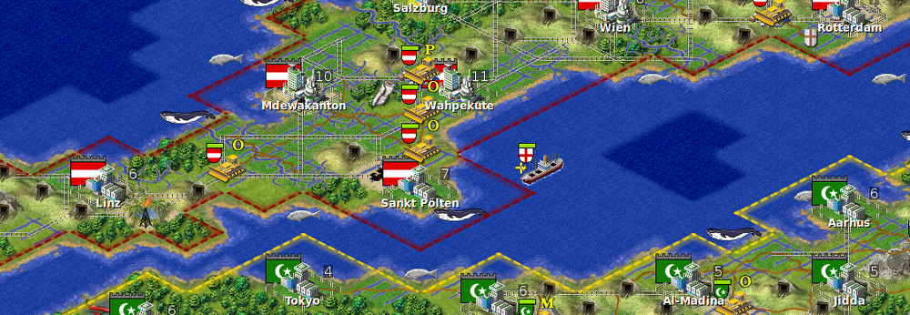

Freeciv is a Free and Open Source turn-based empire-building strategy game inspired by the history of human civilization. The game commences in prehistory and your mission is to lead your tribe from the Stone Age to the Space Age...